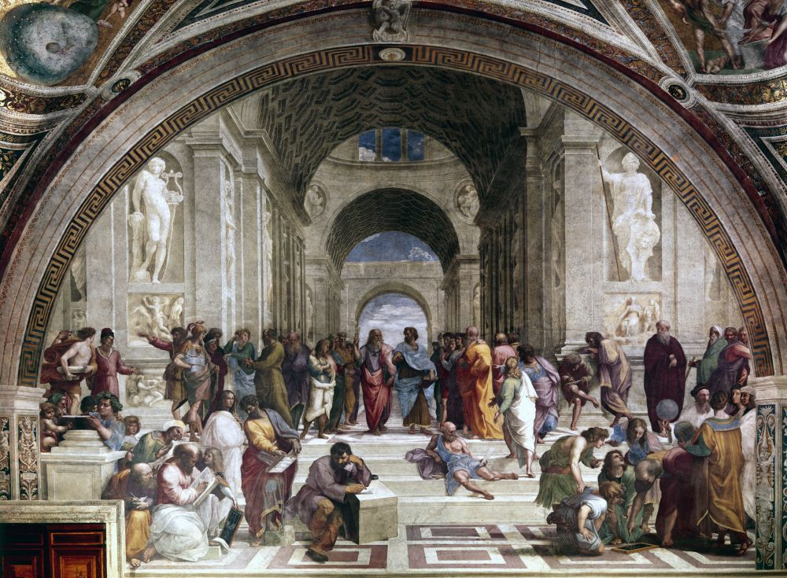
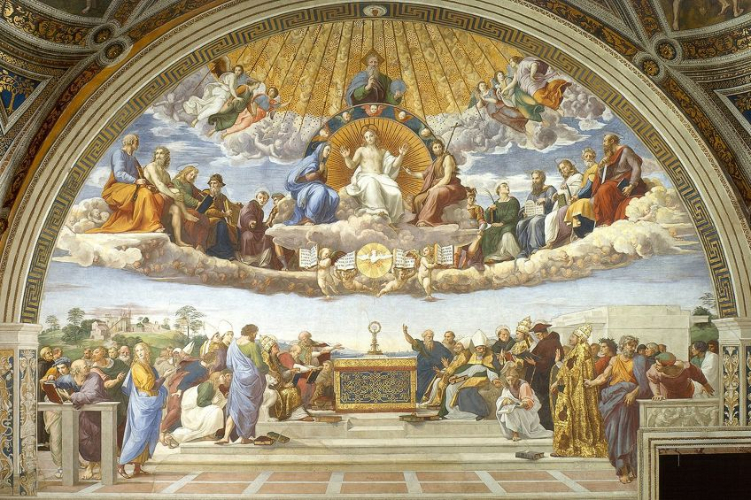

Il Rinascimento è un periodo storico e un movimento culturale che segna il passaggio dal Medioevo alla modernità, coprendo i secoli XV e XVI. È stato caratterizzato da uno sforzo per far rivivere e superare le idee e le conquiste dell'antichità classica, portando a grandi cambiamenti sociali in vari campi, tra cui arte, architettura, politica, letteratura, esplorazione e scienza. Il movimento iniziò nella Repubblica di Firenze e successivamente si diffuse in tutta Europa. La base intellettuale del Rinascimento era la sua versione dell'umanesimo, derivata dal concetto di humanitas romana e dalla riscoperta della filosofia greca classica. I primi esempi di questo risveglio includono lo sviluppo della prospettiva nella pittura a olio e la rinnovata conoscenza di come creare concretezza. Il Rinascimento comprendeva una fioritura innovativa delle letterature latine e vernacolari, lo sviluppo della prospettiva lineare e di altre tecniche di pittura, e una graduale ma diffusa riforma educativa. Ha anche contribuito allo sviluppo dei costumi e delle convenzioni della diplomazia e ad una maggiore dipendenza dall'osservazione e dal ragionamento induttivo nella scienza. Sebbene il Rinascimento abbia visto rivoluzioni in molte attività scientifiche intellettuali e sociali, è forse meglio conosciuto per i suoi sviluppi artistici e i contributi di studiosi eclettici come Leonardo da Vinci e Michelangelo, che incarnarono l'idea dell'"uomo del Rinascimento". Si dice spesso che il periodo si sia concluso intorno al 1600, con il declino dell'umanesimo e l'avvento delle Riforme, della Controriforma e del periodo barocco. Il Rinascimento ebbe caratteristiche e periodi diversi in varie regioni, come il Rinascimento italiano, il Rinascimento settentrionale e il Rinascimento spagnolo. Alcuni storici propongono un "lungo Rinascimento" iniziato nel XIV secolo e terminato nel XVII secolo. Mentre la visione tradizionale si concentra sugli aspetti moderni del Rinascimento e sostiene che si trattasse di una rottura con il passato, molti storici oggi si concentrano maggiormente sui suoi aspetti medievali e sostengono che si trattasse di un'estensione del Medioevo.
 